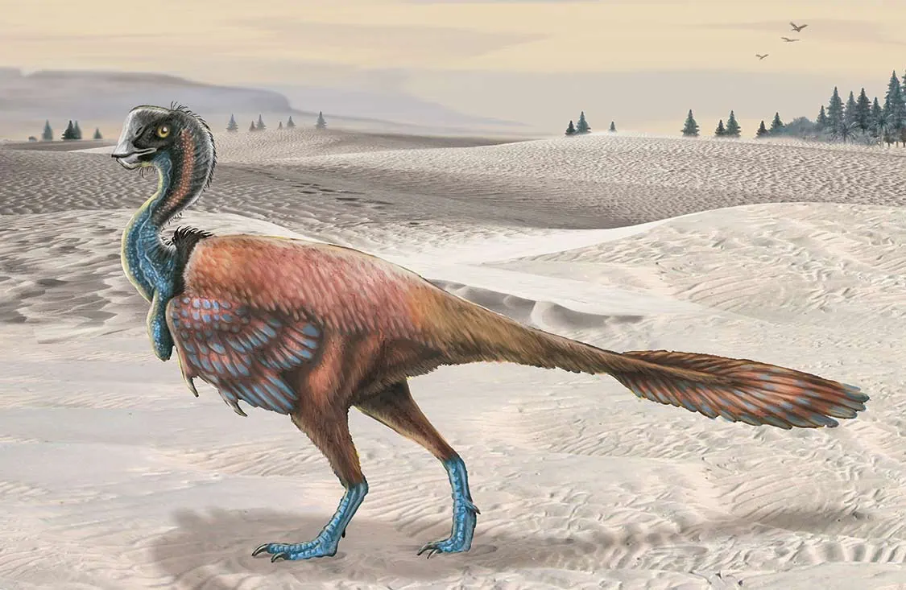
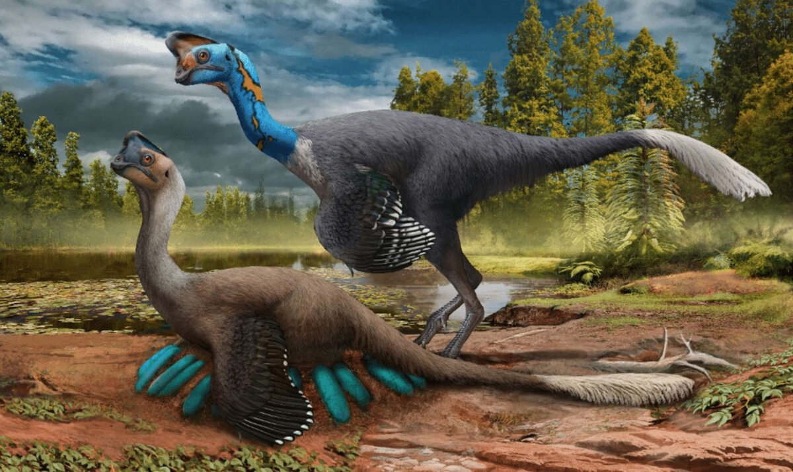
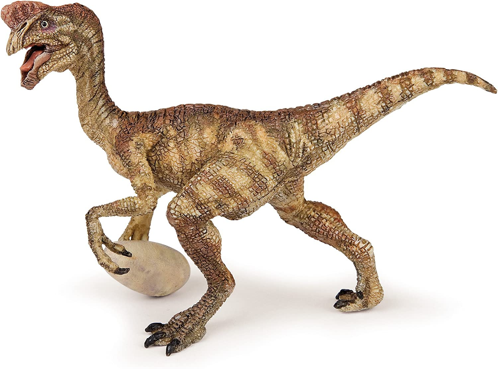
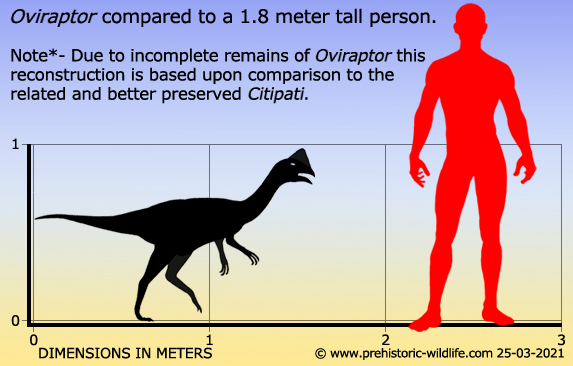
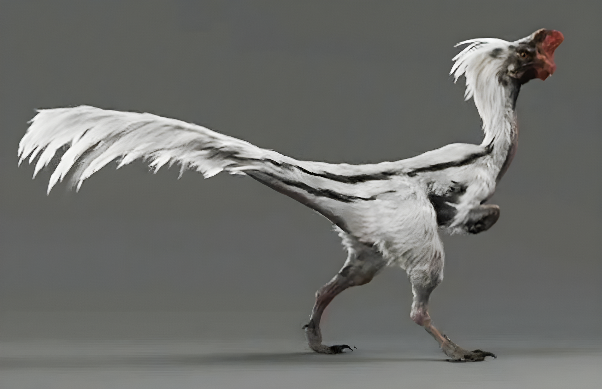
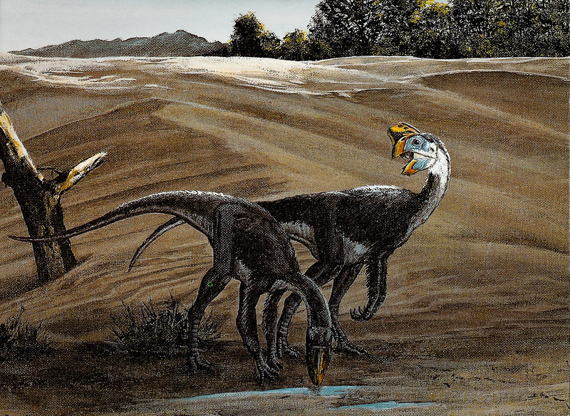
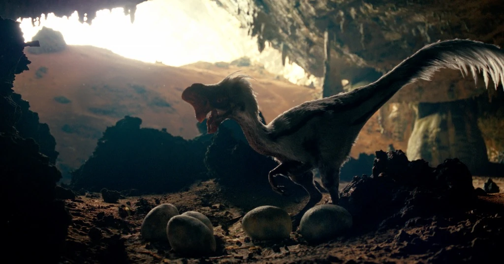
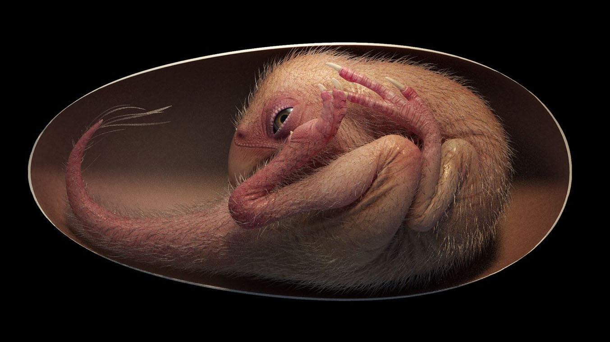
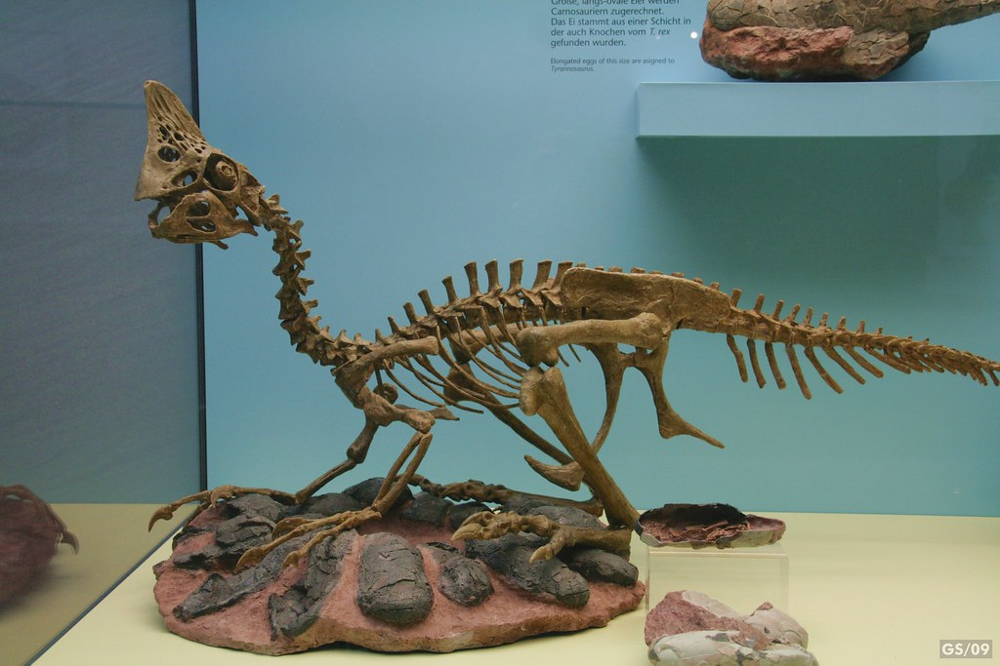

Oviraptor
Kẻ trộm trứng kỷ Phấn trắng
Tổng quan
Kỷ
Cretaceous
Họ
Oviraptoridae
Chi
Oviraptor
Dài
2 m
Cao
0.9 m
Nặng
32 kg
Thức ăn


Oviraptor là một chi khủng long theropoda cỡ nhỏ, có lông vũ sống ở Mông Cổ vào cuối kỷ Creta cách đây 75 triệu năm. Một số mẫu vật được bảo quản tốt nhất của loài khủng long từng được tìm thấy là Oviraptorids.
Nguồn: wikipedia.org
Phân bố
Khu vực phía đông Bắc Trung Quốc, Mông Cổ và Bắc Mỹ
Thông tin thêm về Oviraptor
Kỷ nguyên
Oviraptor là một chi khủng long theropoda cỡ nhỏ, có lông vũ sống vào cuối kỷ Creta, vào thời Campania khoảng 75 triệu năm trước.
Phân bố
Hóa thạch của Oviraptor được tìm thấy ở thành hệ Djadokhta, khu vực phía đông Bắc Trung Quốc và Mông Cổ, nhưng một số cũng được tìm thấy ở Bắc Mỹ (lưu ý rằng đông bắc Bắc Mỹ và tây bắc Âu Á được kết nối với nhau, với tên gọi siêu lục địa Laurasia, trong quá trình Kỷ Bạch phấn).
Tên khoa học
Được miêu tả và đặt tên bởi Osborn, 1924. Khi các nhà khoa học phát hiện ra Oviraptor, nó dường như nằm trên trứng của một con khủng long khác. Họ đặt tên cho con khủng long là Oviraptor trong tiếng Latin nghĩa là “kẻ trộm trứng”.
Kích thước
Oviraptor có kích thước nhỏ, chiều dài khoảng 1,8 - 2 mét và cao khoảng 0,9 mét (3 feet). Nó nặng khoảng 20 - 32 kg (70 pound).
Ngoại hình
Con khủng long có một cái mỏ sắc như dao cạo thay vì răng. Đầu của nó ngắn và sâu, trông giống như đầu của một con vẹt. Nó đứng và đi bằng hai chân sau mảnh khảnh. Chân trước của nó ngắn hơn chân sau. Oviraptor có một cái đuôi dài, điều này có thể giúp nó giữ thăng bằng.
Chế độ ăn
Ban đầu các nhà khoa học đã cho rằng nó ăn trứng đánh cắp từ tổ. Những khám phá sau đó đã khiến họ thay đổi suy nghĩ, hàm của chúng không hữu ích để ăn trứng mà dùng để nghiền thức ăn rất cứng. Các nhà khoa học hiện tin rằng Oviraptor có thể đã ăn động vật có vỏ thân mềm như nghêu, sò và tôm, cá sống ở vùng nước gần đó và có thể là các loại trái cây cứng.
Khám phá
Vào lần hóa thạch đầu tiên được phát hiện nó ở bên cạnh một cái ổ được cho là ổ trứng Protoceratops vào thời đó. Những năm 1990, Osborn phát hiện một ổ trứng Oviraptoridae giống Citipati. Phát hiện này cho thấy ổ trứng "Protoceratops" thực ra là của chính Oviraptor, và chúng đang bảo vệ trứng, cho thấy chúng là loài đẻ trứng và có tình cảm với con cái của mình.
Ý nghĩa rất đa dạng: phát hiện này cung cấp bằng chứng tuyệt vời về hành vi giống chim đã có ở những họ hàng gần của chim và gợi ý rằng những động vật này có thể đã được thu nhiệt (ấp trứng giữ ấm cho trứng).
Sự tuyệt chủng
Oviraptor đã tuyệt chủng khoảng 71 triệu năm trước, cùng với nhiều loài khủng long khác trong thời kỳ Phấn Trắng. Nguyên nhân của sự tuyệt chủng này vẫn chưa được xác định chính xác, nhưng có nhiều giả thuyết cho rằng nó có thể do sự va chạm của thiên thạch với Trái Đất hoặc do những thay đổi môi trường lớn. Ngoài ra, còn có thể sự tuyệt chủng của Oviraptor cũng liên quan đến các sự kiện sinh học, chẳng hạn như sự cạnh tranh với các loài khác hoặc bệnh tật. Dù cho nguyên nhân chính xác của sự tuyệt chủng của Oviraptor là gì, nhưng chắc chắn rằng nó đã biến mất khỏi trái đất hàng triệu năm trước và chỉ còn lại các hóa thạch để làm tài liệu nghiên cứu cho các nhà khoa học.
